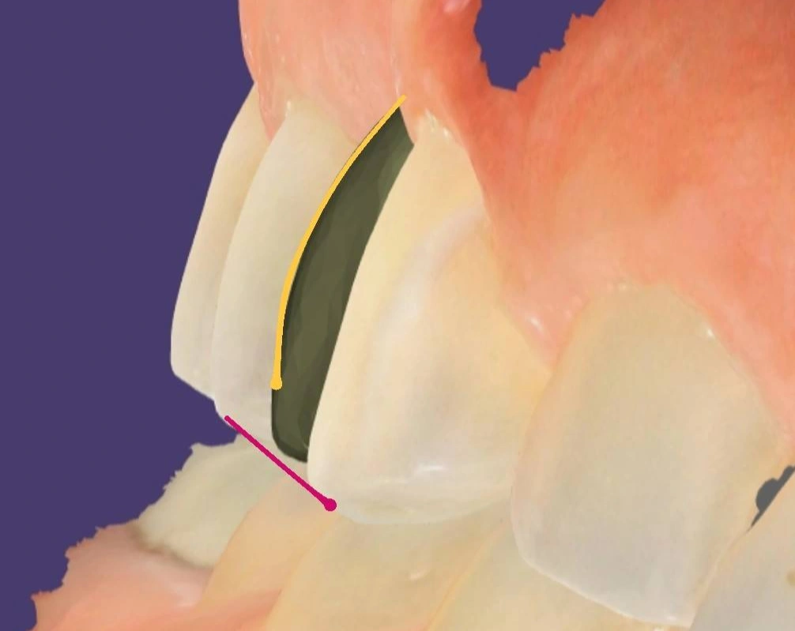

Insight 53 — ایراد مکرر طراحها در روکش پرهمولر بالا که بهتر است از قبل چک شود
تاریخ انتشار:
آخرین بازبینی:
English

توضیح بالینی
روکشِ پرهمولر اولِ بالا بارها با کاسپِ باکالِ کوتاه و برجستگیِ باکالِ تخت طراحی میشود و کل تاج نسبت به کانین و پرهمولر دوم عقبنشسته و ریز درمیآید؛ اکلوژن درست درمیآید اما کانتور باکال و ارتفاع کاسپ از قلم میافتد. این الگو محدود به ایمپلنت نیست و در روکشهای غیردیجیتال هم تکرار میشود؛ راهکار این است که فایلِ طراحی را پیش از ساخت کنارِ دندانهای مجاور چک کنیم
-
شرح مورد
این تصویر طراحی یک روکش ایمپلنت پرهمولر اول بالاست که لابراتوار قبل از ساخت برای چک فرستاده. روی مانیتور چیز عجیبی ندارد. اکلوژنش هم احتمالاً درست است. اما کنار کانین و پرهمولر دوم که نگاهش کنی، مشکل معلوم میشود: کاسپ باکال کوتاه است، برجستگی باکال تخت است و کل تاج نسبت به دو دندان مجاور عقبنشسته و ریز طراحی شده. خطوط علامتگذاری همین اختلاف را با دندانهای کناری نشان میدهند.
این یک اتفاق موردی نیست. الگویی است که من مشخصاً در پرهمولر بالا بارها دیدهام و بابتش زیاد کار برگرداندهام. دربارهی علتش قضاوت نمیکنم، فقط میدانم تکرار میشود، و محدود به ایمپلنت هم نیست. همین کوتاهسازی پرهمولر اول را در روکشهای ساخته شده به روش غیر دیجیتال هم، بارها دیدهام. اکلوژن را درست درمیآورند، اما کانتور باکال و ارتفاع کاسپ از قلم میافتد. -
چرا این دو مهماند
پرهمولر اول بالا در گوشهی لبخند است و نقطهی انتقال فرم از کانین به دندانهای خلفی. برجستگی باکال این دندان پیوستگی خط کانتور را از کانین تا مولر نگه میدارد. وقتی این برجستگی تخت و کاسپ کوتاه ساخته شود، خط بین دندان ۳ و ۵ میشکند و روکش کمحجم و فرورفته دیده میشود. اکلوژن درست این را جبران نمیکند، چون مسئله تماس اکلوزال نیست، فرم باکال است. -
نکتهی اضافه در ایمپلنت
روی ایمپلنت یک عامل دیگر هم به ماجرا اضافه میشود: استخوان بعد از کشیدن دندان تغییر کانتور میدهد و ناحیهی سرویکال دیگر شبیه وضعیت دندان طبیعی نیست. نتیجه اینکه طوق روکش ایمپلنت بهصورت پیشفرض متفاوت از دندانهای مجاور درمیآید و اگر طراح آگاهانه اصلاحش نکند، اختلاف در ناحیهی طوق باقی میماند. برای همین در این کیس خواستهام طوق مثل پرهمولر دوم شود. -
ایرادهایی که در این طراحی گرفتم
- کاسپ بلندتر شود و برجستگی باکال متناسب با دندانهای ۳ و ۵ درآید، بعد ساخته شود.
- طوق مثل دندان ۵ باشد.
- اگر ریجلپ لازم است اشکالی ندارد، اما سطح زیرین ریجلپ مقعر نباشد. اگر برای فرم درست لازم شد، لثه را خودم اصلاح میکنم.
-
نتیجه عملی
چک کردن یک فایل طراحی چند دقیقه وقت میبرد. برگرداندن روکش ساختهشده یعنی دوبارهسازی، جلسهی اضافه و زمان ازدسترفته برای بیمار. چون این ایراد بارها تکرار شده، من آن را به یک قاعدهی کاری تبدیل کردهام: هر وقت پرهمولر بالا در کار باشد، از لابراتوار میخواهم طراحی را قبل از ساخت بفرستد و کانتور باکال و ارتفاع کاسپ را کنار دندانهای مجاور چک میکنم. خطایی که در مرحلهی طراحی گرفته شود، هرگز به دهان بیمار نمیرسد.
محتوای این صفحه برای استفادهٔ آموزشی دندانپزشکان و دانشجویان دندانپزشکی تهیه شده است.